Faixas = atos · pontos = referências · clique para navegarBlocos do argumento · clique para saltar
1985
2024
Dissertação CIAMB-UFG · 1985-2024
Buscando histórias em 40 anos de dados
Cada pixel nesta tela representa um quadrado de 30 por 30 metros no chão. Multiplique isso por 38 milhões de pontos, ano a ano, durante quatro décadas. Cruzamos essa massa de dados — 1,5 bilhão de registros pixel a pixel do MapBiomas — para rastrear a cicatriz física que as leis, os mercados e as decisões econômicas deixaram em Goiás. A história de como o território se reorganizou se divide em três atos.
Comece pelo mapa de 1985 ↓
Como ler esta linha do tempo
Os 40 anos da série se organizam em dois níveis. No agregado, a série se divide em
três atos — períodos macro de 5 a 19 anos, definidos por triangulação
estatística e marcados pelas faixas coloridas da régua acima.
Dentro dos atos, referências institucionais (pinos pretos na régua)
marcam eventos que contextualizam as transições observadas.
Os três atos
I · Pastagem como herança · 1985–2000
II · Expansão e intensificação · 2001–2019
III · Conversão acelerada · 2020–2024
Como os atos foram definidos?
As fronteiras ~2001 e ~2020 não foram escolhidas — foram detectadas por
triangulação de quatro métodos estatísticos independentes:
Método
~2001
~2020
sup-F multivariado (primário)
F = 62,2 ✓
F = 21,5 ✓
STARS (sensibilidade)
2004/06 ✓
—
KL/TV de transições
pico 2003 ✓
pico 2018–20 ✓
Convergência (detecção): 3/3 para ~2001, 2/3 para ~2020.
Validação global — Intensity Analysis (Aldwaik & Pontius):
Kruskal-Wallis H = 22,6, p < 0,001 — os 3 Atos diferem
significativamente em taxa de mudança. Este resultado é um teste único
que compara os 3 períodos simultaneamente, não detecções separadas por fronteira.
A candidata a 4º período (~2005/06) foi rejeitada: taxa total NS (p = 0,060),
embora composicionalmente diferente (perda de veg. natural 5× mais intensa, p = 0,0008).
Role para avançar no tempo — cada parágrafo lateral é um ano.
Clique em uma faixa ou em um pino da régua para saltar.
O mapa e os cards laterais sincronizam com o ano em foco.
Os cards laterais têm acordeões para agricultura, pecuária e socioeconômico.
Veg. naturalPastagemAgriculturaMosaico de usosÁguaUrbanoOutros
1985
Fonte: MapBiomas Coleção 10.1 · pixel-a-pixel (30 m) · o Mosaico de usos entra na barra, mas fica transparente no mapa
I. Pastagem como herança (1985–2000)
O ponto de partida não é uma paisagem natural — é uma fronteira que já se moveu.
O fim do regime militar e a hiperinflação dos anos 1980 enquadram o início da série. Mas o que o mapa mostra em 1985 é o legado da década anterior: POLOCENTRO e PRODECER abriram cerca de um terço do estado para pecuária extensiva. Sem estabilidade macroeconômica, qualquer cálculo agrícola de longo prazo segue bloqueado.
O dourado que domina o centro-sul é pastagem. O verde escuro do norte e nordeste — Paranã, Vão do Paranã — é o cerrado que sobreviveu. A agricultura aparece em manchas pontuais de rosa no sudoeste; ainda é incipiente.
II. Expansão e intensificação (2001–2019)
A soja abre caminho no sudoeste impulsionada pela estabilização da moeda.
O Plano Real em 1994 faz o que nenhuma política agrícola isolada conseguiria: permite calcular o futuro. Logo depois, em 1996, a Lei Kandir zera o ICMS sobre exportações de grãos. Essa conjunção de estabilidade e isenção atrai o capital privado e inicia a grande transformação.
No mapa, o sudoeste (Rio Verde, Jataí e Mineiros) começa a se vestir de rosa com o avanço da lavoura sobre o pasto. Embora a pecuária continue gigante no total do estado, a dinâmica econômica do agronegócio agora pertence à soja.
III. Conversão acelerada, mascarada (2020–2024)
A lavoura avança sobre o pasto mais rápido do que nunca — e o mapa, sozinho, diz o contrário.
Este é o ato em que a medida engana. Olhando só a classe “agricultura” do satélite, a conversão parece ter parado: no Sul goiano ela cai 88%. Mas a área de soja plantada que o IBGE recolhe em campo — que não passa por classificador nenhum — cresce 38% na mesma janela. O que mudou foi o rótulo: a partir de 2021 a conversão de pasto em lavoura passa a ser classificada como “Mosaico de Usos”, a categoria que o MapBiomas usa quando não consegue separar as duas coisas. Contada pela régua corrigida, a saída de pasto para lavoura-ou-uso-misto acelera cerca de 50%.
O que o pasto perde, a lavoura ganha: o recuo da pastagem triplica de velocidade (de 0,07 para 0,27 Mha por ano). A vegetação nativa, essa sim, não muda de ritmo — segue cedendo o mesmo tanto de sempre, agora concentrada ao norte, onde ainda resta Cerrado. Com 34,9% do estado em vegetação natural em 2024, Goiás não encontrou um piso: mudou o endereço da fronteira.
Depois dos mapas: do saldo à tese
A narrativa cobriu o tempo ano a ano. Daqui em diante a leitura muda de escala e
avança em três movimentos, até a tese: o saldo e os fluxos de
40 anos; o que esses números revelam sobre os processos no
agregado; e a marcha ao norte — a reorganização espacial que é
a tese central do trabalho. Cada seção abre com a pergunta que a motivou e fecha
com a resposta em uma frase. A oficina por trás de tudo — como os atos foram
detectados, as camadas de evidência, as 16 decisões metodológicas, os limites —
tem aba própria: Métodos.
Movimento I
O saldo e os fluxos
Quanto cada classe ganhou ou perdeu em 40 anos — e, por trás do saldo líquido, de onde para onde os hectares se moveram.
1 · O que mudou em 40 anos
Depois de 40 anos, quem ganhou e quem perdeu área em Goiás?
Quatro números enquadram a transformação que os três atos descreveram
em detalhe. Eles vêm direto do painel agregado UF (MapBiomas Coleção
10.1 e IBGE/PPM) e podem ser conferidos na
vitrine do painel (aba Métodos).
−5,8 Mha
Vegetação natural perdida · 1985→2024
17,65 → 11,88 Mha (51,9% → 34,9% do território). A 15 pontos do limite legal de Reserva Legal no Cerrado (20%).
×4,8
Crescimento da agricultura
1,17 → 5,58 Mha. A soja sozinha cresce ×12 em área (0,37 → 4,50 Mha) e ×13 em produção (1,3 → 17,0 Mt).
+1,0 Mha
Pastagem · saldo líquido enganoso
10,98 → 11,99 Mha. Mas a trajetória é em U invertido: cresce até 2003 (pico ~14,8 Mha) e depois recua. O saldo agregado esconde o ciclo.
×1,35
Lotação bovina por hectare
1,01 → 1,36 UA/ha. Rebanho cresce 46% (15,9 → 23,2 M cab) enquanto a área de pasto cresce só 9% — a pecuária se intensifica.
Em uma frase
A vegetação natural perdeu 5,8 Mha, a agricultura quase quintuplicou e a
pastagem parece estável no saldo — mas saldo líquido esconde os caminhos.
A pergunta seguinte é de onde vieram e para onde foram esses hectares.
2 · Para onde foram os hectares
De onde veio a terra que cada classe ganhou — e para onde foi a que ela perdeu?
O saldo de § 1 é líquido: diz quanto cada classe ganhou ou perdeu,
mas esconde de onde vieram e para onde foram esses
hectares. O diagrama abaixo cruza o uso de cada pixel em 1985 com o
uso do mesmo pixel em 2024 e abre os fluxos por trás dos saldos.
Carregando diagrama…
Diagrama de Sankey · cruzamento pixel-a-pixel 1985 ↔ 2024 (30 m).
Larguras proporcionais à área em milhões de hectares. Fonte: MapBiomas Coleção 10.1 via GEE.
4,11 Mha
Veg. natural → Pastagem
O maior fluxo da série. Desmatamento histórico para pecuária extensiva — boa parte concentrada nos anos 1980–1990.
2,73 Mha
Pastagem → Agricultura
A maior conversão entre classes manejadas. É o que permite a expansão da lavoura sem desmatar diretamente.
1,29 Mha
Veg. natural → Agricultura (direta)
Desmatamento direto para lavoura. Menor que via pasto, mas existe — e ganha peso no nordeste após 2010.
Matriz de transição 7×7
Em uma frase
Dois fluxos dominam: vegetação → pastagem (4,1 Mha, o desmatamento histórico)
e pastagem → agricultura (2,7 Mha, a conversão moderna). A pastagem é o elo
intermediário de quase tudo — e é por isso que os quatro processos a seguir
giram em torno dela.
Movimento II
O que os dados revelam — no agregado
Quatro processos que o painel estadual deixa nítidos. Eles descrevem o quê mudou na produção goiana — e, juntos, levantam a pergunta espacial que o próximo movimento responde: onde, no território, isso aconteceu? (As séries que alimentam estas análises estão inventariadas na vitrine do painel, aba Métodos.)
3 · A pecuária se desacoplou da área de pasto
Se a área de pasto encolhe desde ~2010, a pecuária encolheu junto?
Até cerca de 2003 a área de pasto cresce junto com o rebanho. Depois ela
recua — a partir do pico de ~14,8 Mha — mas o rebanho não
acompanha a queda: segue subindo. No gráfico, esse é o momento em que as
duas curvas se descolam, por volta de 2010. Em 40 anos o rebanho cresce
+46% (de 15,9 para 23,2 milhões de cabeças) sobre uma área
de pasto que aumenta só +9%. A diferença vai para a
lotação — cabeças por hectare —, que sobe de 1,01 para
1,36 UA/ha (×1,35): mais animais no mesmo chão. É a assinatura de uma troca
de modelo, a pecuária de área dando lugar à pecuária de manejo.
Três séries normalizadas (cada uma em 0–1 do próprio máximo) para comparar a forma das curvas, não o nível absoluto. O que observar: o ponto em que a curva do pasto (sobe até ~2003, depois cai) se separa da do rebanho (que segue subindo) — é aí que a lotação dispara. Fonte: MapBiomas (área de pasto), IBGE/PPM (rebanho bovino).
+46%
Rebanho bovino · 1985→2024
15,9 → 23,2 milhões de cabeças. O efetivo cresce de forma contínua e não inflete para baixo nem quando a área de pasto começa a recuar.
+9%
Área de pastagem · saldo de 40 anos
Cresce até o pico de ~14,8 Mha (≈2003) e depois recua. Rebanho 5× mais veloz que a área é exatamente o que força a intensificação.
×1,35
Lotação · cabeças por hectare
1,01 → 1,36 UA/ha. O salto começa após 2001 e acelera no Ato III (1,17 → 1,36 UA/ha) — pecuária de manejo, não de área.
Lotação bovina por ato · valores e leitura inferencial
Ato I · 1985 → 20001,01 → 0,98 UA/ha
Ato II · 2001 → 20190,98 → 1,17 UA/ha
Ato III · 2020 → 20241,17 → 1,36 UA/ha
O salto acontece após 2001 e se acelera no Ato II. Inferencialmente,
o painel 2FE
Δ Pastagem × Δ Rebanho (AMC) confirma o padrão
mesmo controlando heterogeneidade da AMC e tendências comuns
— detalhes na aba Métodos.
Em uma frase
Não — o rebanho seguiu crescendo e a lotação subiu de ~1,0 para 1,36 UA/ha:
a pecuária trocou área por manejo. É intensificação, não retração.
4 · Lavoura cresceu sobre pasto, não sobre mata
A lavoura que quase quintuplicou cresceu derrubando Cerrado?
O Sankey de § 2 já mostrou: dos 4,4 Mha de agricultura que apareceram
entre 1985 e 2024, 2,73 Mha vieram diretamente da pastagem — mais que
o dobro do que veio diretamente da vegetação natural (1,29 Mha). No mapa,
essa conversão tem endereço: concentra-se no sudoeste
(Rio Verde, Jataí, Mineiros), onde o pasto deu lugar à lavoura.
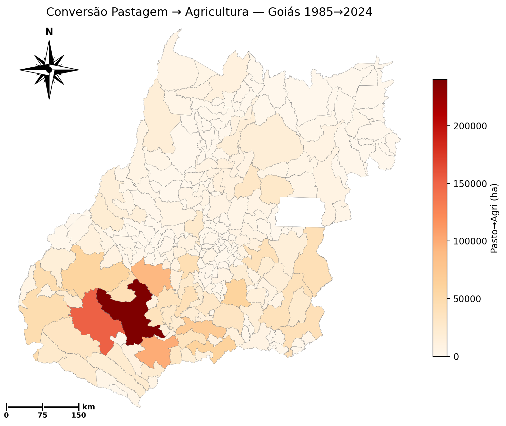
Conversão Pastagem → Agricultura por município (ha), 1985→2024. O vermelho intenso marca o sudoeste — o coração do agronegócio goiano. Fonte: transições pixel-a-pixel MapBiomas (#12).
A expansão sobre pastagem, não sobre mata, é a assinatura do land sparing:
a agricultura cresce em área (×4,8) enquanto o valor agregado agropecuário por hectare
sobe — ou seja, mais produção por m², não apenas mais m². O painel 2FE confirma
(β = −0,004,
p < 0,001):
AMCs onde o VA agro cresceu mais não foram os que
mais expandiram área agrícola. A safrinha de milho (2ª safra) amplifica esse efeito
a partir dos anos 2000 — mesma área, duas colheitas por ano.
E o que foi plantado? · perfil de culturas (e por que a cana parece dominar)
Produção anual por cultura, em milhões de toneladas (eixo Y compartilhado). Fonte: IBGE/SIDRA-PAM.
Massa, não importância. A cana-de-açúcar é colhida em
massa fresca (colmo, ~70–80 t/ha de produtividade); a soja e o milho
são grãos secos (~3–4 t/ha cada). Por hectare, a cana pesa cerca de
20× mais que a soja. Portanto a barra alta da cana no gráfico de
toneladas não significa importância econômica nem área
plantada maior — significa apenas massa fresca colhida.
Em área plantada, a soja é hoje (2024) a principal
cultura goiana com ~4,5 Mha; a cana ocupa menos de 1 Mha. Para
importância econômica, ver o Valor Agregado da
Agropecuária na vitrine do painel
(aba Métodos, tema "Macroeconomia").
A escolha por mostrar toneladas alinha com a maioria das séries
históricas do IBGE/SIDRA-PAM, que registram volume colhido — mas
um gráfico complementar em hectares ou em R$ daria leitura mais
imediata da importância relativa (no backlog).
Conversão sobre pasto vs sobre mata · método pixel-a-pixel
As matrizes de transição cruzam o uso de cada pixel (30 × 30 m) em
dois anos. Pipeline #12 produz a matriz pixel-a-pixel para pares
1985→1995, →2005, →2015, →2024 e 1985→2024. Pipeline #19 produz
39 pares anuais consecutivos.
Os números do Sankey vêm do par 1985→2024 (matriz líquida)
— cada pixel conta uma única vez na sua trajetória inicial/final. Já a
soma dos 39 pares anuais dá um total maior para "Pastagem → Agricultura"
(≈3,83 Mha contra 2,73 Mha da matriz líquida), porque conta pixels que
oscilaram entre classes. As duas leituras são complementares; aqui
preferimos a líquida para destacar trajetórias e não duplicar transições.
Em uma frase
Majoritariamente não: 2,73 Mha vieram de pastagem — mais que o dobro do que
veio direto da vegetação (1,29 Mha). A expansão tem endereço (o sudoeste) e
assinatura de land sparing.
5 · Onde o crédito apareceu, a pastagem recuou
O dinheiro do crédito rural deixa marca visível no mapa do uso da terra?
A partir de 2013, o SICOR (BACEN) registra o crédito rural por
AMC.
Cruzando com a variação anual de pastagem no painel
AMC (2-way FE), encontra-se uma associação inversa
significativa: onde o crédito aumentou, a pastagem encolheu. O sinal
é consistente com a transição financiada pastagem → agricultura
mostrada no Sankey de § 2.
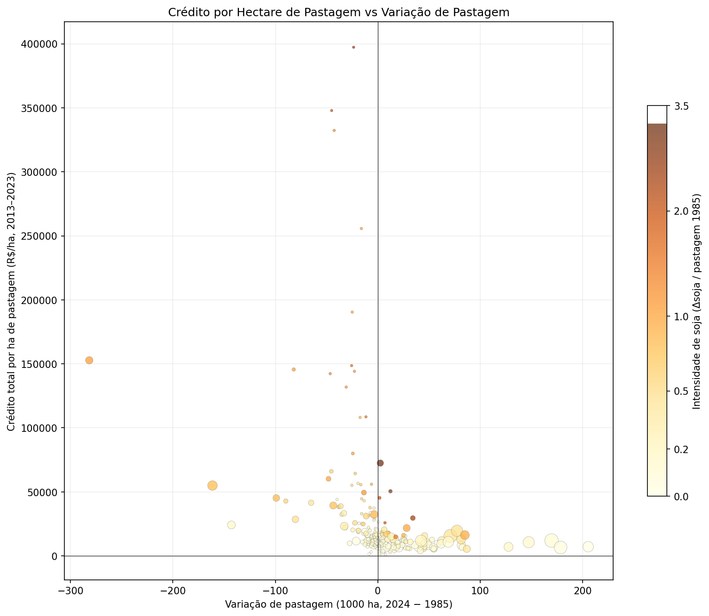
Cada ponto é um município: crédito rural por hectare de pastagem (eixo Y) × variação da área de pastagem 1985→2024 (eixo X). Os municípios de maior crédito por hectare concentram-se à esquerda do zero — onde o pasto recuou ou ficou estável. Fonte: BACEN/SICOR + MapBiomas.A série do crédito rural no estado (SICOR, 2013–2024)
Painel 2FE · Δ Pastagem × Δ SICOR · coeficientes em duas janelas
Especificação:
Δ Pastagemit = αi + γt + β · Δ SICORit + εit.
O efeito fixo de AMC (αi) absorve heterogeneidade local;
o efeito fixo de ano (γt) absorve choques nacionais.
Erro padrão clusterizado por AMC.
Janela
β
SE
p
N
2013–2021 (plena)
−0,0034
0,0006
<0,001
1.956
2002–2023 (estendida)
−0,0029
0,0007
<0,001
2.444
Sinal negativo persiste em duas janelas independentes — robustez
forte. Atenção: a associação 2FE não estabelece
causalidade pelo painel isolado. Tendências paralelas, confundidores
espaciais e o sentido da relação (crédito puxa transição vs. transição
atrai crédito) são discutidos na aba Métodos
(camadas de evidência e
limitações).
Em uma frase
Sim, e com sinal claro: onde o crédito por AMC cresceu, a pastagem recuou
(β = −0,003, p < 0,001, robusto em duas janelas) — consistente com a
conversão pasto → lavoura financiada. É associação forte; o que ela pode e
não pode afirmar sobre causa está na aba Métodos.
6 · Pastagem como reserva de terra: duas populações de conversão
Quando o pasto vira lavoura, ele era pasto "de passagem" ou reserva antiga de terra?
Se a pecuária se desacoplou da área (§ 3) e a lavoura cresceu sobre pasto (§ 4),
resta uma pergunta: quanto tempo a pastagem permaneceu antes de virar lavoura?
A resposta importa porque distinguir conversão premeditada de oportunística muda a leitura
política: se a pastagem funciona como reserva de terra de longo prazo, políticas de
crédito e regulação fundiária têm alavancagem diferente do que se toda conversão fosse
rotação agrícola de curto prazo. A idade da pastagem no momento da conversão
pixel-a-pixel — todos os 44,6 milhões de eventos de conversão de Goiás,
3,8 milhões de hectares, 11,2% do estado — revela que não existe uma única
resposta: existem duas populações.
Distribuição da idade da pastagem (anos) na conversão para agricultura, por Ato. O que observar: a curva não tem um pico só, mas dois — um perto de ~4 anos (pasto jovem) e outro perto de ~23 anos (pasto antigo). É a forma que importa aqui, e só ela: a variação das medianas entre os atos não pode ser lida como tendência — antes de 2020 ela mede horizonte de observação (a série começa em 1985), e depois de 2020 mede a migração do rótulo de destino para "Mosaico de Usos" (D25/D26). 64% dos pixels já eram pastagem em 1985, e desses a idade real é desconhecida (censura à esquerda). Fonte: MapBiomas Coleção 10.1, censo pixel-a-pixel.
Onde os dois mecanismos coexistem
Cada AMC pintada pelo veredito: a idade tem dois modos ali dentro?
O mapa é quase todo de uma cor — e é esse o achado. A região explica
0,5% da variação da idade; os dois mecanismos rodam em toda
parte. Até julho de 2026 este painel mostrava outra coisa:
as AMCs pintadas pela idade média, sob a legenda "jovem no Sul, antigo no
Norte". Esse gradiente não sobreviveu — medido pela régua superior
(pasto → agricultura ∪ mosaico) a amplitude Sul→Norte cai de
7 para 2 anos e as pontas trocam de lugar. Três testes independentes
chegaram lá (#28C, #40, #33). Ver
D26.
A distribuição por região — os dois picos em cada recorte
mediana 13 a
Vegetação → pastagem → agricultura
n = 6,4 milhões de pixels (14,3%). Terra aberta do Cerrado que passou
pela pastagem antes da lavoura — a reserva de fronteira, com
cauda longa.
mediana 5 a
Agricultura → pastagem → agricultura
n = 3,9 milhões de pixels (8,8%). Pasto de passagem dentro de
um sistema já agrícola — rotação/ILP de ciclo curto, sem abertura de
vegetação.
mediana 12 a
Mosaico de usos → pastagem → agricultura
n = 5,3 milhões de pixels (11,8%). Origem que o MapBiomas não conseguiu
separar entre lavoura e pasto. Esta coorte não aparecia até
jul/2026: um defeito de código a contava como idade desconhecida.
μ ≈ 4,2 a (31,5%)
Rotação rápida / premeditada
Na janela 2016–2024, 31,5% dos pixels convertidos pertencem a uma
componente gaussiana com
média de ~4,2 anos e desvio σ ≈ 1,9. Pastagem jovem convertida rapidamente — consistente
com planejamento (abertura para lavoura em 2–7 anos) ou rotação agricultura → pastagem → agricultura.
μ ≈ 22,5 a (68,5%)
Reserva histórica / oportunismo
A segunda componente tem média ~22,5 anos (σ ≈ 7,4) e 68,5% do peso.
Pastagem consolidada, convertida tardiamente —
consistente com o mecanismo oportunístico: produtores ativam reservas de terra antigas quando
o preço da commodity ou o crédito tornam a conversão viável.
Censo pixel-a-pixel, janela 2016–2024, sobre 3.455.514
eventos de idade conhecida. Até jul/2026 estes cards traziam 4,6 a (44%) e 21,8 a (56%) —
números da amostra de 78 mil pontos, publicados sob uma seção que já anunciava o censo.
A bimodalidade é estável no que importa: os dois modos aparecem em todas as janelas
testadas (2016–24, 2017–24, 2018–24, 2020–24) e mal se movem — o jovem entre
4,2 e 4,5 anos, o antigo entre 22,5 e 23,5. E aparecem em toda parte: 5 de 5
mesorregiões e 162 de 164 AMCs são bimodais por dentro.
O que não se pode ler aqui é uma tendência: o peso relativo entre os dois modos
varia com a janela escolhida, mas essa variação acompanha a migração do rótulo de destino
para "Mosaico de Usos", não o calendário (D25).
A coexistência dos dois mecanismos conecta § 4 (lavoura sobre pasto) com § 5 (crédito
→ retração de pasto): o crédito rural financia tanto a conversão premeditada (projetos
integrados) quanto a oportunística (arrendamento de pastagem consolidada).
O que esta seção mede — e o que ela deixou de afirmar
Modo jovem (giro/ILP)μ ≈ 4,4 a
Modo antigo (reserva)μ ≈ 22,9 a
Mesorregiões bimodais5 de 5
AMCs bimodais162 de 164
Variação da idade explicada pela região0,5%
Censura à esquerda: 64% dos 44,6 milhões de eventos já eram pastagem em 1985.
A idade real desses pixels é desconhecida. Análises interpretativas restringem-se aos
16,0 milhões não-censurados.
Duas afirmações foram retiradas em jul/2026, e vale saber quais.
(1) A mediana por Ato — 4 a / 14 a / 8 a — saiu: nos Atos I e II a censura consome
a mediana (o número mediria o horizonte de observação, não a idade), e no Ato III a
população medida é selecionada pelo rótulo de destino. Com esta série não se pode dizer
que a idade do pasto convertido subiu ou caiu ao longo do tempo.
(2) O gradiente latitudinal de idade — "Sul jovem, Norte velho" — caiu em três
testes independentes: sob pasto → (agricultura ∪ mosaico) a amplitude vai de
7 a para 2 a (#28C), o gradiente índice-jovem × latitude some (#40) e a tabela do Ato III
inverte: Sul 16 a → 32 a, Norte 27 a → 23 a (#33).
Composição de origem (janela 2020–24, não-censurados): rotação
agricultura→pastagem→agricultura 43,0%, mosaico de usos 19,8%, ambíguo 18,1%,
oportunístico clássico 16,6%, premeditado curto 2,5%. Vale para o subconjunto cujo destino
foi rotulado "agricultura" — que é justamente o recorte que a
D25 mostra ser seletivo nesta janela.
Limitação: a análise é descritiva — não estabelece causalidade.
Sem dados de CAR/SICAR para testar a hipótese de arrendamento diretamente.
Em uma frase
Os dois — e é isso que importa: a idade na conversão é bimodal (~5 anos × ~22 anos),
a assinatura de dois mecanismos coexistindo no mesmo estado: rotação premeditada e
ativação oportunística de reservas antigas de terra. E coexistindo em toda parte:
não há um Goiás da rotação e outro da reserva — há os dois, em cada recorte que se olhe.
Desacoplamento, lavoura sobre pasto e duas idades de pastagem têm algo em comum: são
retratos estaduais. Dizem o quê mudou, mas não onde. E o "onde"
não é detalhe: a idade do pasto não separa as regiões, mas a fronteira sim — ela
se move, e num eixo nítido, do Sul ao Norte. É o que o próximo movimento — o coração do
trabalho — revela.
Movimento III · o clímax
A marcha ao norte
Aqui o trabalho deixa de descrever o quê mudou e passa a mostrar onde —
e essa é a tese central. Entre 1985 e 2024, Goiás passou por uma reorganização
espacial da produção agropecuária: intensificação no Sul, fronteira no Norte,
coordenadas por forças de mercado comuns sobre um gradiente de aptidão. Cinco passos
constroem e testam essa afirmação.
O centro de massa em movimento, 1985 → 2024
Cada ponto é o centro de gravidade de um uso da terra no estado — a média
das posições das 166 AMCs, ponderada pela quantidade da variável ali. Aperte
reproduzir (ou arraste a faixa) e veja os quatro centros caminharem
ao norte ao longo de 40 anos. À direita, a mesma marcha lida como latitude,
ano a ano.
1985
Latitude do centro, ano a ano — mais alto = mais ao norte
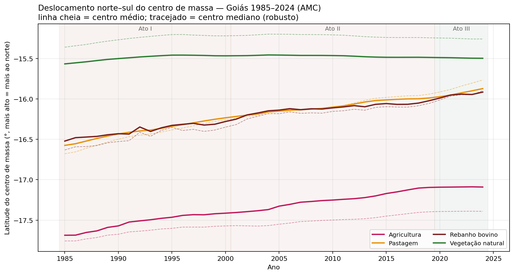
Latitude do centro de massa de cada variável, ano a ano (#32).
7 · O padrão: o centro de massa migrou ao norte
Dá para medir, num único número por ano, para onde a produção está indo?
Como medir, num número, se "a produção subiu para o norte"? A resposta é o
centro de massa: para cada ano e cada variável, toma-se a posição de
cada uma das 166 AMCs e pondera-se pela quantidade da variável ali (hectares de pasto,
cabeças de gado, etc.). O resultado é um ponto único — o "centro de gravidade" daquela
atividade no estado. Acompanhá-lo ano a ano mostra para onde a atividade se desloca.
O gráfico-chave: a latitude do centro de massa de cada variável, ano a ano (mais alto = mais ao norte; faixas = os três atos). A vegetação natural (verde) é um teto estável; pastagem e rebanho marcham para cima; a agricultura sobe em paralelo, ~1,2° ao sul — o gradiente persistente. Fonte: painel AMC (#32).
+78 km
Pastagem · deslocamento ao norte (40 anos)
O maior avanço da série. Rebanho +67 km e agricultura +65 km acompanham; a vegetação natural quase não se moveu (+8 km) — mas esse agregado engana: é a floresta que está presa, enquanto o campo nativo e a savânica recuaram ao norte (ver robustez abaixo).
~120–130 km
Agricultura ao sul de pasto/rebanho — em todos os anos
Não é só "tudo subiu": existe um gradiente latitudinal persistente. A lavoura permanece sistematicamente mais ao sul que pasto e rebanho — a marca de dois Goiáses.
Ato III
Só agora a agricultura desacelera
A partir de 2020, pasto e rebanho seguem subindo, mas a agricultura quase estaciona — o sinal de deslocamento mais limpo da série, e é recente.
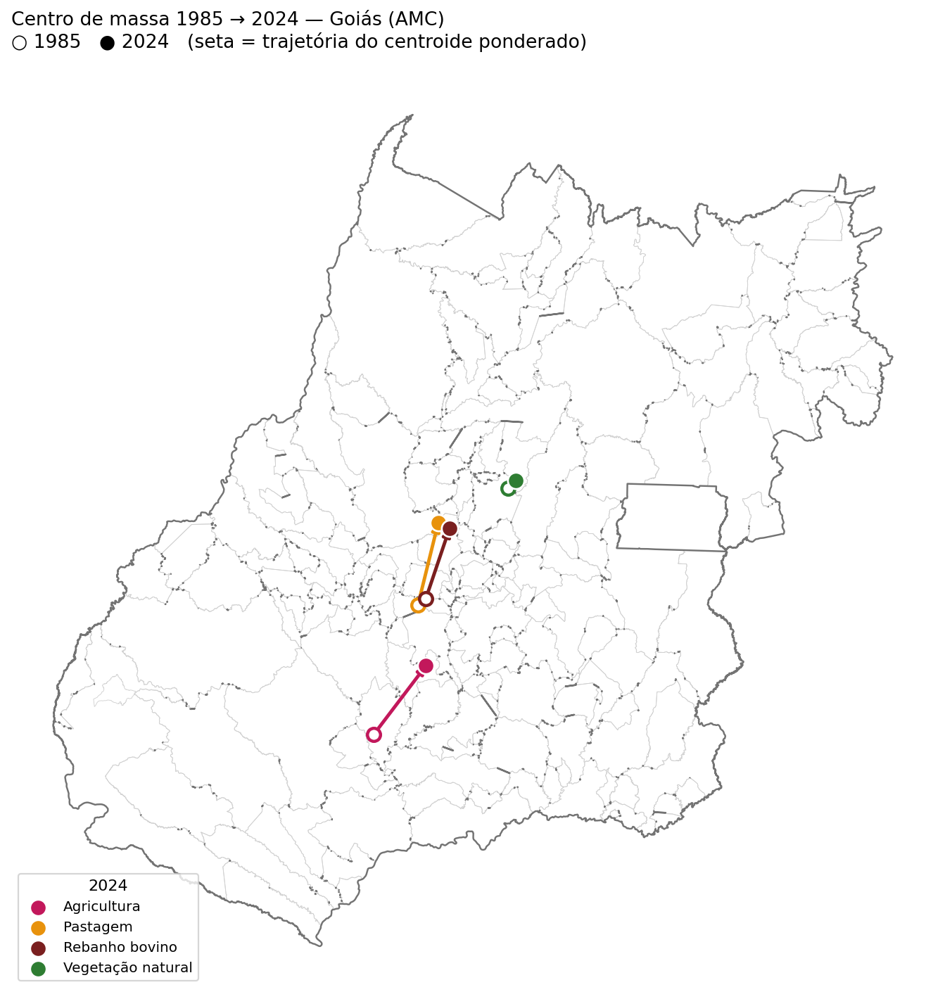
O mesmo no mapa: o centro de massa de cada variável em 1985 (círculo vazado) e 2024 (preenchido), ligados pela seta de trajetória. Todas as setas apontam ao norte; a da vegetação natural é a mais curta. Fonte: painel AMC (#32).A dispersão também mudou? · elipses de desvio-padrão por ato
Além do centro, a elipse de desvio-padrão mostra como cada atividade se
espalha pelo território em cada ato — útil para separar "deslocou o centro" de
"também concentrou ou espalhou".
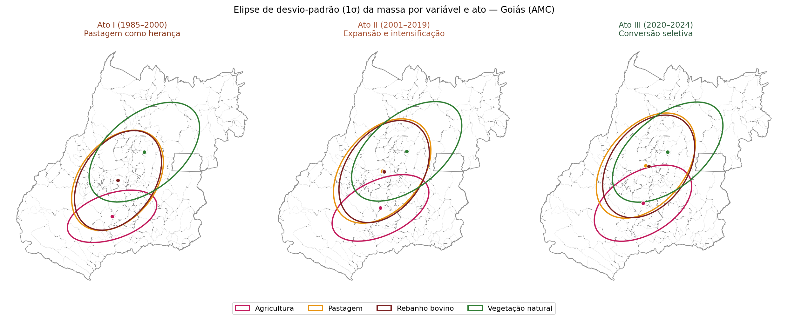
Elipses de 1 desvio-padrão por ato (#32) — cada uma cobre ~68% da atividade naquele ato. O que observar: a elipse da agricultura não só sobe como cresce (eixo maior 160→183 km) em vez de encolher — ou seja, a lavoura se espalhou mais, não se consolidou num núcleo.
A marcha resiste ao escrutínio? · quatro provas de robustez (malha, fonte, especificidade, formações)
Antes de tratar a marcha ao norte como fato, ela foi submetida a cinco testes que poderiam
derrubá-la — trocando a malha, trocando a fonte de dados, checando se o movimento é
específico da fronteira e medindo o quanto a mudança de rótulo do MapBiomas a distorce.
As três primeiras passaram; a quarta ainda reforça a leitura; a quinta encontrou
um viés real, quantificou-o e mostrou que ele não derruba a manchete.
1 · Não é artefato da malha (#43).
O centro de massa usa o centroide de cada AMC — e as AMCs do Norte (fronteira) são maiores
e mais irregulares que as do Sul. Recalculando pixel a pixel do raster MapBiomas,
sem malha administrativa nenhuma, o resultado é o mesmo: as curvas colam a ~1–2 km
ao longo dos 40 anos. O Sul→Norte não é efeito de como as unidades foram desenhadas
(MAUP).
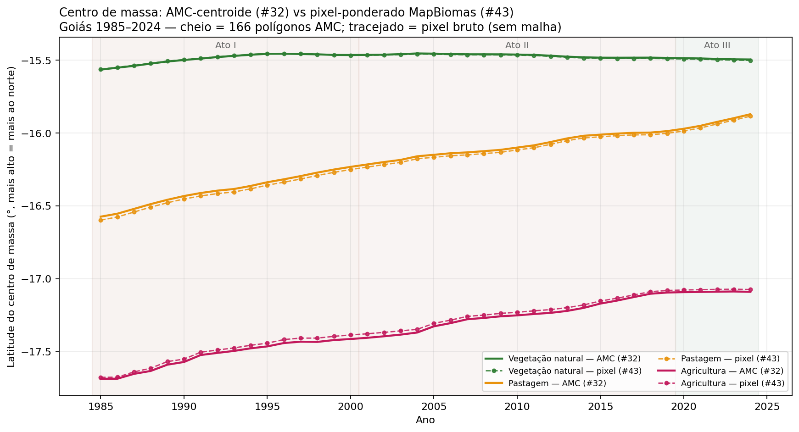
Centroide-AMC (linha cheia, #32) vs pixel-a-pixel bruto (tracejado, #43) para as três classes com raster. Sobrepostos o tempo todo — a leitura Sul→Norte não vem da agregação por AMC. Fonte: #43.
2 · Duas fontes independentes concordam (#44).
A soja tem posição pelo raster (satélite, MapBiomas) e pela SIDRA (censo agropecuário).
Os dois centroides andam juntos (correlação 0,89; diferença média ~7 km) — validação cruzada que,
por tabela, empresta credibilidade ao centroide do rebanho, que só existe em dado tabular.
E revela que, quando o trabalho diz "agricultura", é essencialmente soja: as curvas são quase a mesma.
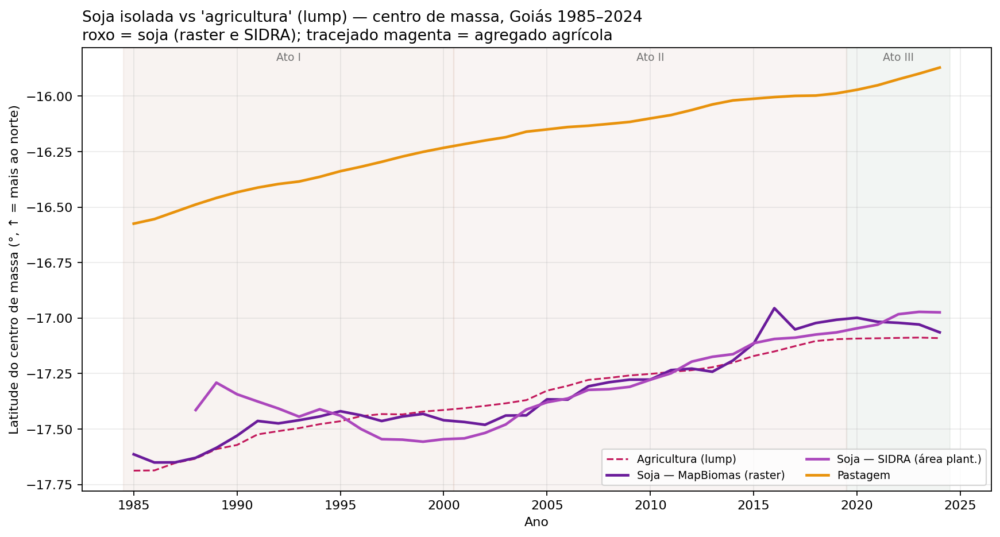
Soja pelo raster (roxo escuro) e pela SIDRA (roxo claro), coladas entre si e ao agregado "agricultura" (tracejado magenta). Fontes independentes, mesmo centroide. Fonte: #44.
3 · A marcha é específica da fronteira (#44).
Se tudo simplesmente "derivasse ao norte", seria um artefato. Dois controles mostram que não:
a área urbana fica parada (placebo limpo, no eixo Goiânia–Anápolis) e o
leite — pecuária da bacia consolidada do Sul — fica ancorado ao sul enquanto o
rebanho de corte marcha; o vão entre os dois dobra (30 → 67 km).
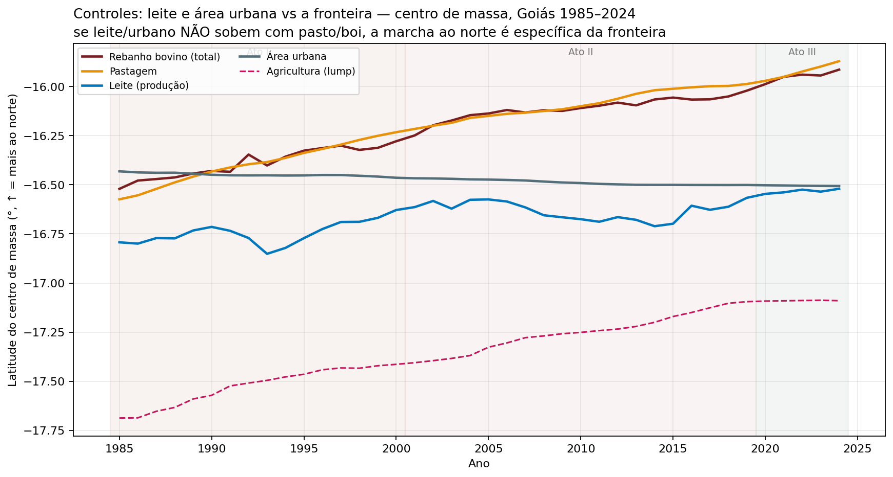
Controles: a área urbana (cinza) é horizontal por 40 anos; o leite (azul) fica ao sul do rebanho o tempo todo. A marcha ao norte é da fronteira agropecuária, não deriva genérica. Fonte: #44.
4 · O "teto" é a floresta — a vegetação convertível recuou (#44).
O +8 km "quase parado" da vegetação natural é média enganosa. Abrindo as formações: a
floresta está presa (segue os rios, +9 km), mas o campo nativo recuou
fortemente ao norte e a savânica +12 — as formações convertíveis recuaram com a
fronteira, e o pasto as alcança em latitude por volta de 2021. O agregado escondia isso; a
versão aberta é ainda mais consistente com a fronteira.
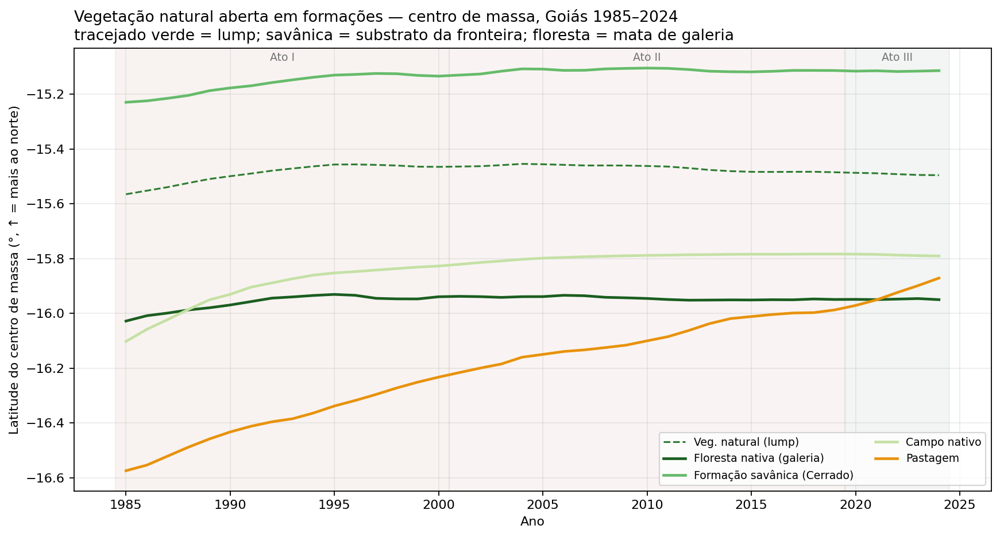
Vegetação natural aberta: floresta (verde escuro) presa; campo nativo (verde claro) e savânica recuam ao norte; o pasto (laranja) os alcança ~2021. Fonte: #44.
5 · A mudança de rótulo enviesa a ponta da série — e o viés foi medido (#28D).
Este é o teste que achou alguma coisa. Como a terra que sai da pastagem passou a ser
rotulada "Mosaico de Usos" em vez de "agricultura" no fim da série (D25), o centroide da
agricultura para de enxergar parte da conversão recente — e a massa que ele deixa de ver está
ao norte dele. Medindo pelo bracket (D26): o centroide da agricultura no Ato III
é subestimado em ~4 a 10 km, e o centro de massa do crescimento do Mosaico entre
2019 e 2024 fica 46,5 km ao norte da agricultura visível. Ou seja, o
congelamento aparente da linha magenta depois de 2020 é assinatura do classificador, não do
campo: sob a régua agricultura ∪ Mosaico a agricultura continua subindo
(+4,1 km, com intervalo de confiança excluindo zero).
Por que isso não derruba a marcha. O viés é de poucos quilômetros e
só na ponta recente de uma das linhas. A manchete desta seção — os +78 km
da pastagem ao longo de 40 anos — vem de uma classe que a mudança de rótulo quase não drena, e o
rebanho vem da SIDRA, que nunca passa pelo classificador. O gradiente (agricultura sempre ao sul)
e o sentido do movimento ficam de pé nas duas pontas do bracket. O que se abandona é uma frase
menor: "a agricultura parou de subir depois de 2020".
Em uma frase
Sim — o centro de massa. E ele diz que tudo marchou ao norte (pastagem +78 km,
rebanho +67 km, agricultura +65 km), com a agricultura sempre ~120–130 km ao sul:
o gradiente persistente dos dois Goiáses.
8 · O mecanismo: dois Goiáses
Qual transição, em qual região, moveu o centro de massa?
Se o centro de gravidade se moveu, qual transição, em qual região o moveu?
Recortando as conversões pixel-a-pixel por mesorregião (ordenadas por latitude) e por
ato, aparece um gradiente nítido: ao sul, pasto → agricultura (rosa);
ao norte, vegetação → pasto (verde). Duas lógicas convivendo no mesmo
estado.
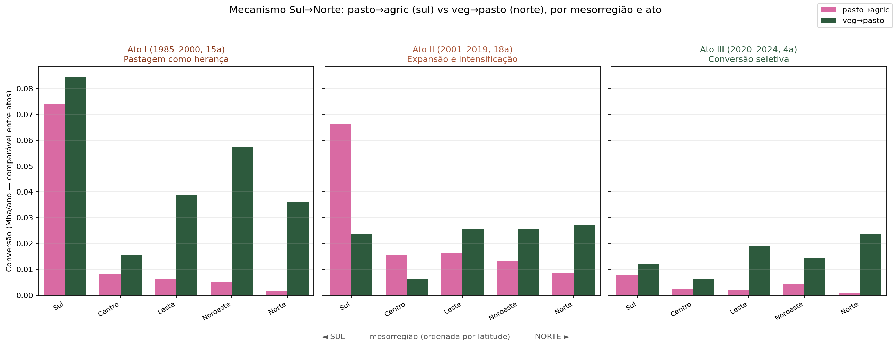
Conversão (Mha/ano) por mesorregião (Sul→Norte) e ato. O pasto→agric (rosa) só lidera no Sul, e sobretudo no Ato II (o boom da soja); o veg→pasto (verde) domina o resto e persiste no Norte. Atenção ao painel do Ato III: o rosa que encolhe ali é medida crua — a conversão não parou, mudou de rótulo (ver o bloco abaixo). Fonte: transições pixel-a-pixel por mesorregião (#33).
Sul
Intensificação: a lavoura entra sobre o pasto
No Ato II o Sul perde pasto líquido (−0,57 Mha) e ganha lavoura (+0,76 Mha). É a única região onde pasto→agric chega a ser a conversão dominante.
Norte
Fronteira: o pasto entra sobre o Cerrado
Enquanto o Sul intensifica, Norte e Noroeste ganham pasto novo a partir de vegetação — a fronteira de expansão clássica.
−49% × −13%
Queda do veg→pasto no Ato III: Sul × Norte
A abertura de Cerrado praticamente cessa no Sul e persiste no Norte (e cresce 3% no Centro). É esta medida — imune à mudança de rótulo — que sustenta "o Sul trava, o Norte avança".
Transição dominante por região e ato · grade completa
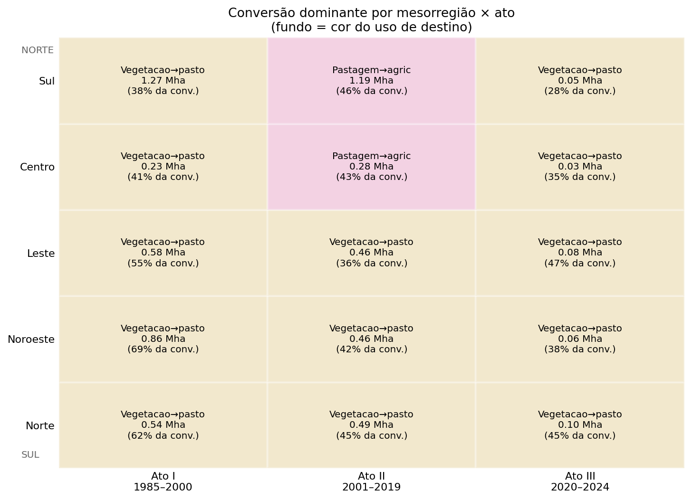
Transição dominante em cada célula região × ato (#33). Lendo de baixo (Sul) para cima (Norte): o pasto→agric só aparece como dominante nas faixas do Sul; o veg→pasto toma conta do Norte — a mesma divisão da figura principal, agora célula a célula. Na faixa do Ato III vale a mesma ressalva: a coluna do destino "agricultura" está subregistrada.
🛑 O "−88%" que esta seção publicava até jul/2026 — e por que ele saiu
Este bloco trazia um terceiro número de destaque: no Ato III o pasto→agric
do Sul cairia 88% — "a lavoura para de comer pasto no Sul". A auditoria
da mudança de rótulo (D25/D26) testou a frase nas
duas réguas e ela inverteu de sinal, nas cinco mesorregiões. Variação da
taxa anual, Ato II → Ato III:
régua
Sul
Leste
Centro
Noroeste
Norte
pasto→agric (o número antigo)
−88,4%
−88,3%
−85,6%
−66,1%
−89,5%
pasto→(agric ∪ mosaico)
+51,0%
+28,6%
+38,7%
+119,5%
+31,9%
soja plantada, IBGE/SIDRA (imune)
+244%
+73%
+583%
+567%
+35%
O intervalo não apenas cruza zero — ele troca de sinal, e a âncora que a
mudança de rótulo não toca (a área de soja plantada do IBGE) fica do lado de cima. Pela
regra da D26, a queda de 88% não é um achado sobre o campo: é a assinatura do
rótulo. O que se pode dizer do Ato III é a pergunta grossa — a saída de pasto puro para
lavoura-ou-uso-misto acelerou em todas as mesorregiões.
A outra metade sobrevive. O veg→pasto tem origem e destino
fora do Mosaico, então é imune: ele cai 49% no Sul e só 13% no Norte. O contraste
"Sul trava, Norte avança" continua de pé — por uma medida que o rótulo não alcança. É
essa que o § 11 usa, e a conclusão de lá sai reforçada: se a demanda por terra no
Sul seguiu firme, o que acabou por lá foi o Cerrado, não o apetite.
Em uma frase
Duas lógicas em paralelo: no Sul, pasto vira lavoura (intensificação); no Norte,
vegetação vira pasto (fronteira). E no Ato III o que trava no Sul é a abertura de
Cerrado (−49%, contra −13% no Norte) — não a conversão de pasto, que acelerou.
9 · Não é deslocamento causal — é reorganização
A lavoura do Sul empurrou o pasto para o Norte?
A tentação é dizer que a lavoura do Sul empurrou o pasto para o Norte — um
"vazamento" de uso da terra dentro do estado (iLUC intra-estadual). Essa hipótese é
forte, intuitiva… e foi testada e não confirmada. E esse nulo é um
resultado, não uma lacuna.
p = 0,97
Sem precedência temporal
A expansão agrícola do Sul não antecede o avanço de pasto/rebanho no Norte (Granger ΔAgric_Sul → ΔPasto_Norte). Não há "primeiro o Sul, depois o Norte".
θ = −0,16
Sem empurrão espacial
Vizinhos ao sul não "empurram" o pasto local — o sinal é o oposto do previsto: eles co-expandem. Não é spillover direcional.
β = −0,52
Mas há substituição local forte
Onde a lavoura entra, o pasto sai ali mesmo — intensificação local, coerente com o painel 2FE (aba Métodos). O que não existe é o canal de longa distância Sul→Norte.
A leitura defensável: não é um motor empurrando o outro, são dois mecanismos
locais paralelos — intensificar no Sul, abrir fronteira no Norte — respondendo
ao mesmo impulso de mercado, sobre um gradiente de aptidão. Por isso o trabalho
nunca diz "deslocamento" sem qualificar: o termo honesto é reorganização
espacial, ou "marcha ao norte da fronteira".
A ponta solta: e o teste reverso que dava significativo? (#42)
Um detalhe ameaçava inverter tudo: o teste reverso (ΔPasto_Norte →
ΔAgric_Sul) dava significativo (p = 0,0007). Lido ao pé da letra, seria o Norte
antecedendo o Sul — a história de cabeça para baixo. O pipeline #42 mostrou que é
artefato espúrio, com três pregos:
A série pasto_Norte é I(2) — nem sua 1ª diferença é estacionária; cruzá-la com uma série I(0) é a montagem-padrão da regressão espúria.
O método correto (Toda-Yamamoto, robusto a integração) zera as duas direções (reverso 0,45; forward 0,25): co-movimento sem líder.
Os placebos acendem em pares sem mecanismo (o pasto do Norte "lidera" até o pasto do Sul, mesmo p) — assinatura de co-tendência, não de causa.
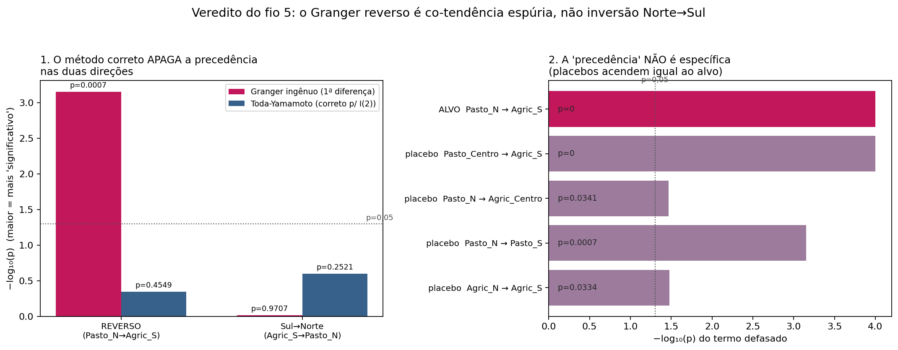
Síntese do #42 (Decisão D16): lead-lag de séries AMC integradas exige Toda-Yamamoto + placebos. Não inverte a leitura — reforça o nulo.
Em uma frase
Não — a hipótese foi testada e não se confirmou: sem precedência temporal, sem
empurrão espacial; o que há é substituição local forte. O termo honesto é
reorganização espacial, não deslocamento. E esse nulo é um
resultado, não uma lacuna.
10 · O drive comum: câmbio, crédito, preço
Se uma região não empurra a outra, o que move as duas ao mesmo tempo?
Se não é uma região empurrando a outra, o que move as duas ao mesmo tempo? Um
impulso macro comum. Coletando drivers exógenos (preço internacional de
soja/boi/milho, câmbio real efetivo, crédito rural) e testando se suas viradas
antecedem as inflexões do uso da terra, dois sinais se destacam.
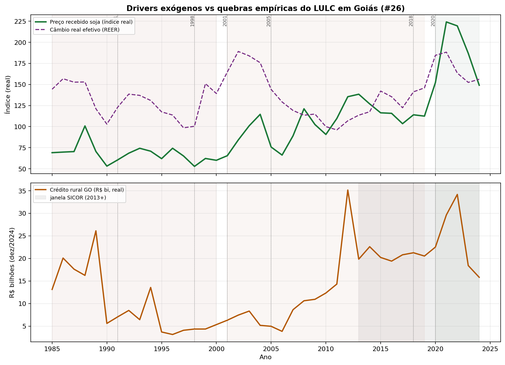
Drivers macro exógenos × marcos da série (1985–2024). Câmbio e crédito antecedem as inflexões; o preço co-move sem liderar. A órfã de 1991 ganha nome: o colapso de crédito do Plano Collor (−56%). Fonte: IPEA Data, série em primeiras diferenças (#37).
câmbio + crédito
Antecedem o uso da terra
O câmbio competitivo (REER) precede pasto e rebanho do Norte; o crédito rural precede agricultura e vegetação — com exogeneidade confirmada (placebos reversos nulos).
preço
Co-move, mas não lidera
O preço de commodity sobe junto, contemporaneamente, mas não antecede (Granger p = 0,24–0,81) — a transmissão de preço é simultânea, não dianteira.
O choque comum bate mais forte onde a exposição é maior? · painel AMC (#38)
Como o driver é nacional (o mesmo número para todas as AMCs num ano), o painel não
testa "o driver mexe o uso da terra?" e sim "o choque comum bate
mais forte onde a exposição é maior?" (interação driver × aptidão de
fronteira, 2-way FE). A hipótese câmbio × fronteira → rebanho
confirma a direção (p = 0,031), mas a grade completa não sobrevive à correção de
multiplicidade (FDR): é indício sugestivo, não achado estabelecido.
N ≈ 38, drive comum inferido, não provado — uma honestidade que a tese carrega.
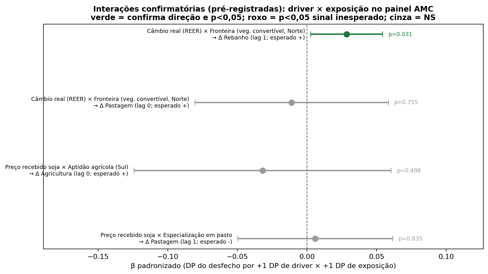
Coeficientes das interações driver × exposição de fronteira (#38). Barras à direita do zero = o choque comum bate mais forte onde a aptidão de fronteira é maior. Só câmbio×fronteira→rebanho cruza o limiar (p=0,031) — e mesmo essa não sobrevive ao FDR, por isso "sugestivo, não estabelecido".
Em uma frase
Um impulso macro comum: câmbio e crédito antecedem as inflexões do uso
da terra; o preço co-move sem liderar. Evidência consistente — mas inferida,
não provada (N pequeno, e a grade AMC não sobrevive ao FDR).
11 · O teto de oferta: o Cerrado convertível só resta no norte
E a oferta de terra? A fronteira agropecuária está fechando?
Falta uma perna. Tudo até aqui foi demanda (preço, câmbio, crédito). Mas e a
oferta de terra? A desaceleração recente do Sul seria o estoque de
Cerrado convertível se esgotando? A resposta é escalonada — e fecha o argumento.
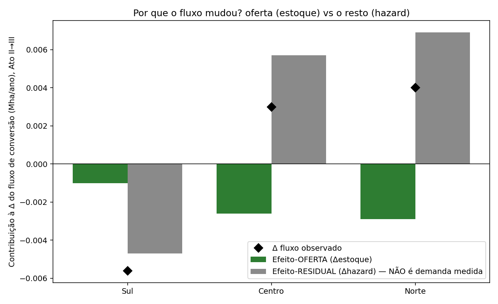
Por que o fluxo de conversão mudou (Ato II→III), por região: efeito-oferta (estoque ↓, verde) vs efeito-demanda (hazard ↑, rosa); o losango é a mudança observada. No Sul, o estoque baixo segura o fluxo; no Centro/Norte, a demanda ainda domina. Fonte: decomposição da conversão (#39).
~60%
Do Cerrado convertível de 1985 ainda resta — no estado
No agregado a fronteira NÃO fechou: o fluxo de conversão não desacelerou, apenas migrou ao norte (a faixa norte concentra ≈62% do convertível remanescente).
Sul: fechou
Estoque baixo + hazard caindo
Só no Sul o fluxo caiu (53% do estoque de 1985, estabilizado) — fronteira fechada e giro à intensificação, coerente com o veg→pasto do Sul caindo 49% no Ato III, contra 13% no Norte (§ 8).
sob demanda forte
Logo, é restrição de oferta
A demanda NÃO esfriou no Ato III (câmbio, preço e crédito todos em alta) — e a soja plantada do IBGE mais que triplicou de ritmo no Sul. Se mesmo assim a abertura de Cerrado parou por lá, a trava é de oferta: o que acabou foi o Cerrado, não o apetite.
Estoque convertível por região · a fronteira perseguindo o que resta
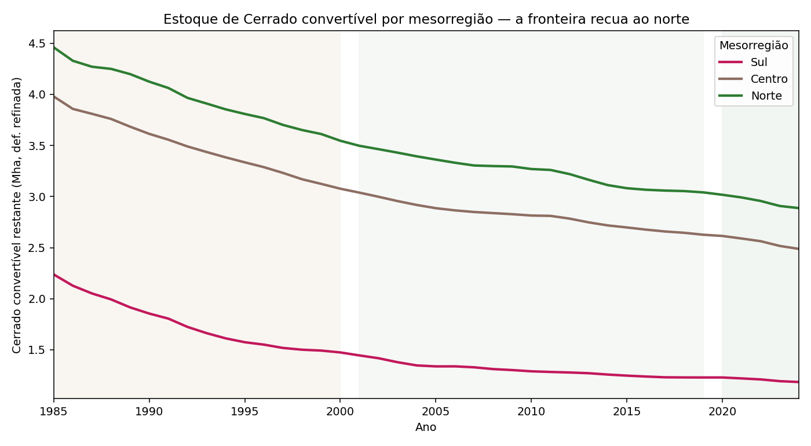
Estoque de Cerrado convertível por região (#39). A "marcha ao norte" é, em parte, a fronteira perseguindo o estoque que só resta no norte.
Em uma frase
No estado, não — restam ~60% do Cerrado convertível, concentrado no norte. No Sul,
sim: estoque baixo sob demanda forte é a assinatura de restrição de oferta.
A marcha ao norte é, em parte, a fronteira perseguindo o estoque que resta.
12 · Mais três fios — e o método se autocorrigindo
O que mais a marcha revela — e o que impediu este trabalho de dizer mais do que os dados autorizam?
Três investigações enriquecem o quadro sem mudar a tese. As três têm a mesma forma:
uma primeira leitura empolgante, uma verificação que
derruba parte dela, e um achado menor — porém defensável — que sobrevive.
Não é acidente: é a Decisão D14 (controlar o gradiente Sul→Norte antes de atribuir
efeito próprio) operando. Junto com o caso do Granger reverso (§ 9), são a melhor
amostra do método deste trabalho: a autocorreção documentada.
Pipeline #41 · fogo
O fogo é a vanguarda da fronteira?
Primeira leitura
O fogo lidera a marcha — está à frente no espaço e ~1 ano à frente no tempo.
A verificação derrubou
A liderança temporal é frágil: some sob log1p, inverte sem os anos de
seca de 1985/2010, e o Granger agregado é nulo.
O que sobrevive
Uma vanguarda espacial robusta: o centroide do fogo está ao norte da
conversão em 39 de 39 anos (+73 km). Dianteira geográfica, não temporal —
co-evolução sob distúrbio comum.
Ver o mapa das trajetórias
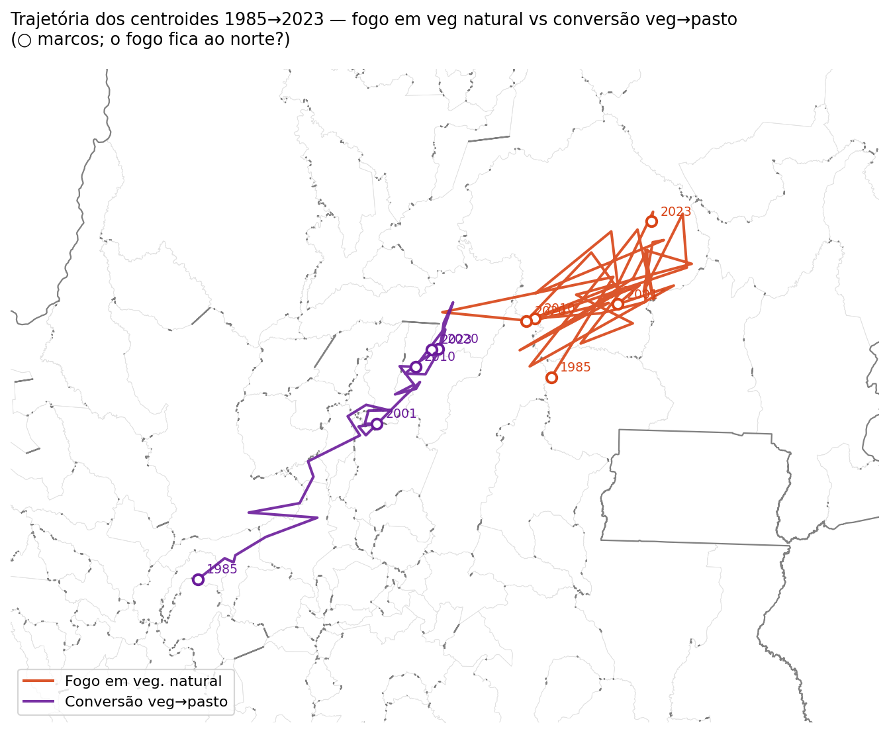
Centroides de fogo (vermelho) e de conversão veg→pasto (1985→2023): o fogo fica ao norte. Fonte: #41.
Pipeline #40 · duas lógicas
O plantio direto explica o pasto jovem?
Primeira leitura
A lógica jovem é estrutural: onde há plantio direto, o pasto é convertido cedo
(r = −0,37).
A verificação derrubou
Controlando a latitude, a correlação colapsa (−0,22, no fio). O plantio direto
co-localiza com a lógica jovem — daqui nasceu a Decisão D14. (Com a idade
medida pelo censo o par volta a p = 0,031: o veredito honesto é não
estabelecido, não "sem efeito".)
E a segunda verificação derrubou o resto
Em jul/2026, medindo cada evento nas duas réguas (agric e
agric ∪ mosaico), o gradiente índice-jovem × latitude
desaparece — ρ ≈ 0, não significativo nas três janelas. A "geografia
das duas lógicas" era o rótulo de destino, não o campo.
O que sobrevive
A regra: em corte transversal estadual, reporte a parcial controlando latitude antes de
atribuir efeito próprio (D14). E a coexistência das duas lógicas — em toda parte, não
uma por região.
Ver o mapa da lógica dominante
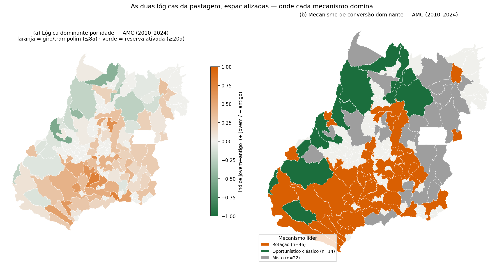
Lógica dominante de conversão por AMC, na régua crua: rotação jovem (sul) × oportunismo antigo (norte). Fonte: #40. Mantido como registro do que caiu — sob o bracket por evento este gradiente não se sustenta.
Pipeline #28C · bimodalidade
A região causa as duas idades do pasto?
Primeira leitura (a tentação)
Sul jovem + Norte velho ⇒ a bimodalidade da idade (§ 6) seria causada
pela região.
A verificação derrubou
Decompondo within/between: a geografia explica uma fração pequena da separação
jovem/velho, e a maior parte mora dentro das células. Os dois modos coexistem
em 5/5 mesorregiões e 162/164 AMCs (censo).
E a segunda verificação foi mais longe
Sob a régua superior, a região explica 0,5% da variação da idade (era
3,7%) e a amplitude Sul→Norte cai de 7 para 2 anos. Caiu também a versão fraca da
primeira leitura — "um gradiente regional no peso da mistura" —, que esta
página defendeu até julho de 2026.
O que sobrevive
A coexistência, e mais forte do que antes: quanto menos a região explica, mais claro
fica que os dois mecanismos rodam em toda parte. O que a fronteira do Norte tem de
diferente não é uma lógica própria — é mais Cerrado restante (§ 11).
Ver a bimodalidade por célula
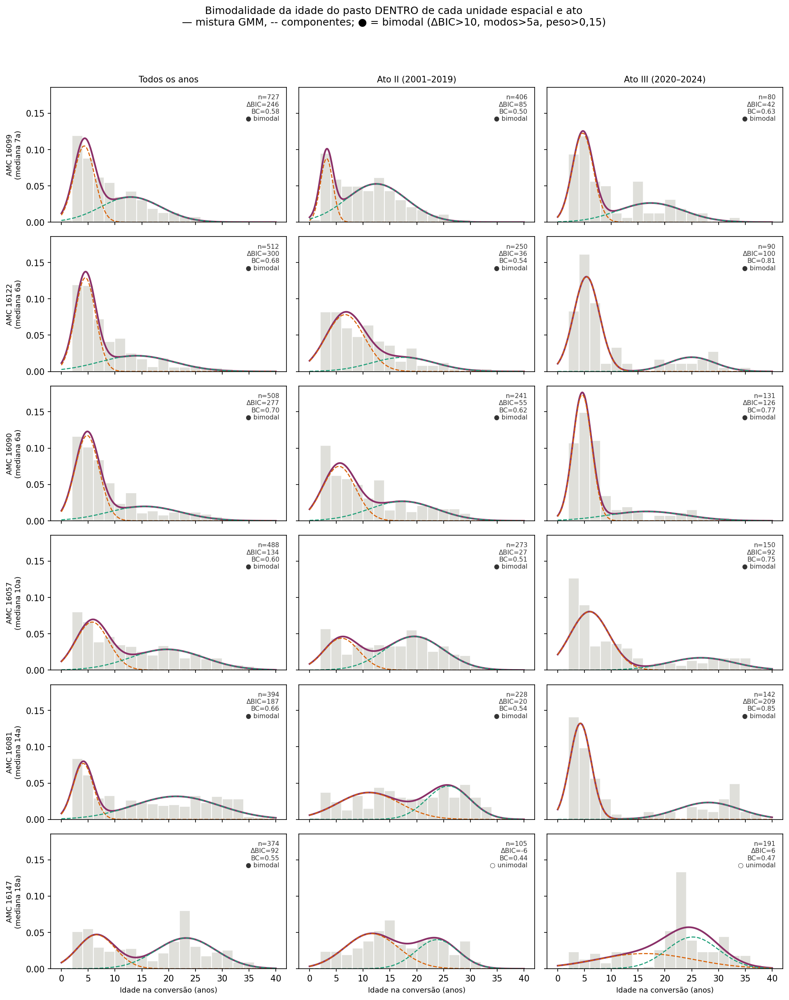
Bimodalidade por célula região × ato na malha AMC (#28C).
Em uma frase
Fogo na dianteira geográfica; duas lógicas que coexistem em toda parte, e não uma por
região; bimodalidade que a região não cria nem modula. Três vezes uma primeira leitura
mais forte foi testada e rebaixada antes de virar afirmação — e, em dois casos, uma
segunda rodada derrubou o que a primeira tinha deixado de pé. É isso que separa
um conjunto de gráficos de uma tese.
A afirmação central
Goiás passou por uma reorganização espacial da produção agropecuária
entre 1985 e 2024 — intensificação no Sul, fronteira no Norte — coordenada por forças de
mercado comuns (câmbio, crédito, preço) sobre um gradiente estrutural de
aptidão, e limitada por um teto de oferta de Cerrado convertível
que só resta no norte. O padrão é empiricamente verificável (centro de massa, mecanismo
por mesorregião, robustez multi-resolução) e não é explicável como
deslocamento causal direto de uma região sobre a outra — hipótese que foi testada e refutada.
O que a tese não afirma: que o iLUC não existe (o canal intra-estadual testado
não se confirma — outros não foram testados); que o drive comum está provado (está
inferido); que a desaceleração do Ato III é reversão estrutural (são 4–5 anos). São essas
qualificações que transformam um conjunto de gráficos numa tese.
Como sabemos de tudo isso?
Cada afirmação acima se apoia numa oficina: a detecção estatística dos três atos,
três camadas de evidência (descritiva → inferencial → causal), 16 decisões
metodológicas documentadas, a vitrine do painel de dados — e a lista honesta do
que a análise ainda não responde.
A aba Narrativa conta o que aconteceu com o território e qual é a tese. Esta aba
abre o capô: como os três atos foram detectados, que tipos de evidência sustentam
cada afirmação, o inventário dos dados, as decisões que mantêm tudo na mesma régua —
e o que a análise ainda não responde.
1 · Como os três atos foram detectados
A divisão da nossa história em três períodos não é uma escolha narrativa subjetiva — é
um resultado matemático. Para encontrá-los, submetemos a série de transições a quatro
testes estatísticos independentes de quebra estrutural. A convergência dos algoritmos para
marcos muito próximos nos dá a segurança física de que o regime de ocupação do estado de
fato mudou nesses anos, isolando qualquer ruído da série histórica.
Método
O que faz
~2001
~2020
sup-F multivariado (primário)
Encontra o ponto que melhor divide a série multivariada em dois segmentos
F = 62,2 ✓
F = 21,5 ✓
STARS (Rodionov)
Detecta mudanças abruptas na média sequencialmente
2004/06 ✓
—
KL/TV de transições
Mede o quanto a matriz de transição LULC muda ano a ano
pico 2003 ✓
pico 2018–20 ✓
Validação global — Intensity Analysis (Aldwaik & Pontius)
Enquanto os 3 métodos acima detectam as fronteiras (cada um aponta anos específicos),
o Intensity Analysis tem papel diferente: ele valida globalmente se os períodos
resultantes são de fato distintos. O teste Kruskal-Wallis compara os 3 Atos simultaneamente: H = 22,6, p < 0,001 — os três períodos diferem significativamente
em taxa de mudança LULC. H e p são do mesmo teste — não são detecções separadas para ~2001 e ~2020.
É um resultado único que confirma que o que existe de cada lado das fronteiras é qualitativamente diferente.
3/3
Convergência de detecção para ~2001
Os 3 métodos de detecção apontam uma mudança de regime por volta de 2001 — entrada da China na OMC, sistematização do crédito rural.
2/3
Convergência de detecção para ~2020
STARS não detecta quebra em 2020 (as mudanças são gradativas, não abruptas). A fronteira é real mas menos nítida.
✓
Validação global (Intensity Analysis)
O teste Kruskal-Wallis confirma que os 3 períodos diferem significativamente entre si (H = 22,6; p < 0,001) — valida ambas as fronteiras simultaneamente.
Por que não 4 ou 5 períodos? · robustez e sub-fase 2001–2005
Uma candidata a 4ª fronteira apareceu em ~2005/06 (STARS e KL/TV).
O Intensity Analysis foi decisivo para rejeitá-la:
Taxa total de mudança: Mann-Whitney p = 0,060 (NS) — as sub-fases não diferem em velocidade geral.
Perda de veg. natural: p = 0,0008 (***) — diferem em composição, não em volume.
Robustez do sup-F: 2001 estável em 9/9 combinações; 2020 em 6/9; ~1991 instável.
Poder estatístico: com n = 4 anos na sub-fase, o teste tem poder de 0,63 — insuficiente para concluir.
Decisão: documentar como sub-fase do Ato II (aceleração composicional 2001–05),
sem promover a fronteira de período.
2 · As quatro métricas do tempo (área, Δ, slope, aceleração)
Para descrever como o uso da terra muda, usamos quatro métricas encadeadas. A
analogia mais simples é a de um carro numa rodovia: posição diz
onde ele está, velocidade diz quanto ele se moveu, e
aceleração diz se ele está pisando no acelerador ou freando.
Cada métrica responde uma pergunta diferente — e cada uma tem seu ruído.
Posição
Área
Quanto há de cada classe no ano t, em milhões de hectares (Mha).
areat
Velocidade instantânea
Delta (Δ)
Variação ano-a-ano. Mostra a mudança imediata, mas é ruidosa — mistura sinal real com erro de classificação.
Δt = areat − areat−1
Velocidade média (5 anos)
Slope
Ajusta uma reta por mínimos quadrados em 5 anos consecutivos. Filtra o ruído anual e revela a tendência.
OLS(area ~ ano), janela t−4 .. t
Segunda derivada
Aceleração
Variação do slope. Diz se a expansão (ou retração) está se acelerando ou desacelerando.
Leitura: em 2024, a pastagem perdia área a uma taxa média de 0,289 Mha por
ano (slope) — e essa perda estava se intensificando (aceleração negativa).
A agricultura ainda crescia, mas desacelerando.
Detalhes técnicos · janela, HAC, trailing vs centrada
Janela = 5 anos. Compromisso entre suavização (janelas maiores filtram mais) e responsividade
(janelas menores detectam viradas mais rápido). Cinco anos é o intervalo usual em estudos LULC.
Trailing × centrada. A versão trailing usa apenas o passado (t−4 a t) e serve para inferência —
quando se está no ano t, só se conhece o passado. A versão centrada (t−2 a t+2) suaviza melhor mas
"trapaceia" usando o futuro: é só para visualização.
Erro padrão HAC Newey-West (maxlags=2). Resíduos de uma regressão em 5 anos consecutivos
são autocorrelacionados; o ajuste HAC corrige o erro padrão para que p-valores não fiquem otimistas.
Filtro 2σ na aceleração. Como slopet e slopet−1
sobrepõem 4 anos, a aceleração é autocorrelacionada por construção. Só pontos >2σ entram nos gráficos —
destaca eventos realmente fora do normal.
3 · Três camadas de evidência
O delta é um saldo líquido: se a pastagem perde 0,3 Mha num ano, isso não diz
para onde foi essa área — pode ter virado lavoura, regeneração ou solo exposto.
As matrizes de transição resolvem isso. Para cada par de anos
consecutivos, o MapBiomas é cruzado pixel-a-pixel (30 m × 30 m): cada pixel
guarda seu uso em t e em t+1. O resultado é uma matriz 7×7 (origem × destino)
que abre o que o delta agrega — as seis classes unificadas mais o
Mosaico de Usos, que desde jul/2026 entra como grupo próprio em vez
de ser descartado (era por onde escapava a conversão recente; ver D25/D26 abaixo).
O Sankey do Movimento I (aba
Narrativa) representa essa matriz somada de
1985 a 2024. Sobre essa base de transições, a dissertação constrói três camadas
de evidência, cada uma com força e fraqueza distintas — descritivo → inferencial
→ causal.
1,90 Mha
Pastagem → Agricultura · 2003–2018
Conversão acumulada entre o boom de commodities e a intensificação pós-Código Florestal — o "core" da reorganização agrícola.
3,83 Mha
Pastagem → Agricultura · 1985–2024
Total da série. Confirma que a expansão da lavoura em Goiás se deu predominantemente sobre pastagem, não sobre vegetação natural.
Quando dizemos que "o crédito rural acelerou a transição pastagem → agricultura",
que tipo de afirmação estamos fazendo? A tabela abaixo organiza os três níveis.
Camada
Pergunta
Força
Fraqueza
Correlação UF
"Houve coincidência temporal entre as duas séries no estado?"
Simples e comunicativa; comparação direta com a literatura.
N pequeno (11–39 obs); sem controle por confundidores.
Painel 2-way FE
"Dentro de cada AMC, X explica Y depois de remover choques nacionais?"
Causalmente forte; absorve heterogeneidade da AMC e tendências comuns.
Não isola marcos específicos; R² within baixo.
DiD piecewise
"Este marco regulatório teve impacto diferencial em GO vs estados-controle?"
Identifica efeito de política em janela curta.
Depende de tendências paralelas (não testado aqui).
3.1 · Correlação UF — camada descritiva
Agrega tudo no nível estadual (uma linha por ano) e correlaciona séries de
primeiras diferenças. Decisão metodológica importante: nunca correlacionar
níveis com níveis — duas séries que crescem juntas geram correlação
espúria (regressão fajuta). Dos 36 pares testados, apenas 1 ficou
significativo: Δ Agricultura × Δ Soja, r = −0,30 (p = 0,022). A camada
UF é principalmente comunicativa, não inferencial.
UF, 1985–2024: variação da agricultura plotada contra a variação anual da produção de soja em Goiás. Cada ponto é um ano.
3.2 · Painel 2-way FE — camada inferencial (núcleo da dissertação)
Usa as 166 AMCs × ~10 anos como painel. A especificação é
Δlulcit = αi + γt + β·Δxit + εit:
o efeito fixo de AMC (αi) absorve tudo que é constante no
local (bioma, solo, distância de estradas, cultura local); o efeito fixo de
ano (γt) absorve choques nacionais (preço da soja global, política
monetária federal). O coeficiente β que sobra é o efeito dentro de
cada AMC, líquido de tendências comuns. Erro padrão clusterizado por
AMC. Dos 16 modelos testados, 6 são significativos. Os dois mais robustos:
β = −0,004
Δ Agricultura × Δ VA agropec. · p < 0,001
Significativo em duas janelas independentes (2013–2021 e 2002–2023). O crescimento do valor agregado agro veio de produtividade, não de expansão de área — evidência empírica de land sparing.
β = −0,003
Δ Pastagem × Δ SICOR · p < 0,001
Significativo em duas janelas. Aumento no crédito rural por AMC está associado à retração da pastagem — consistente com a transição pastagem → agricultura financiada por crédito.
Tabela completa · 6 modelos significativos do Painel 2FE
Y (Δ LULC)
X (Δ socio)
Janela
β
SE
p
N
Pastagem
SICOR
2013–2021
−0,0034
0,0006
<0,001
1.956
Pastagem
SICOR
2002–2023
−0,0029
0,0007
<0,001
2.444
Pastagem
VA agropec.
2013–2021
−0,0015
0,0007
0,033
2.214
Pastagem
Bovinos
2002–2023
≈0
≈0
0,004
5.412
Agricultura
VA agropec.
2013–2021
−0,0035
0,0007
<0,001
2.214
Agricultura
VA agropec.
2002–2023
−0,0040
0,0007
<0,001
4.674
β em Mha de LULC por unidade de Δ X. Erro padrão clusterizado por AMC. Janelas: plena (2013–2021, com SICOR) e estendida (2002–2023, sem SICOR).
Painel multivariado · SICOR domina, VA agro perde significância
Quando Δ SICOR, Δ Bovinos, Δ VA agropecuário e Δ Fogo entram simultaneamente,
o crédito rural é o canal dominante da retração de pastagem:
R²within sobe de 0,047 para 0,122 em agricultura; de 0,030 para 0,072 em pastagem.
VIFs ≤ 1,55 — sem multicolinearidade relevante.
Interpretação: quando o crédito rural está no modelo, o valor agregado agropecuário deixa de ser significativo
para pastagem — o crédito captura o canal que o VA agro representava no modelo univariado.
A intensificação agrícola (Δ Agricultura × Δ VA agro) é o achado mais robusto, sobrevivendo a todos os controles.
3.3 · DiD piecewise — camada causal (avaliação de marcos)
Compara Goiás (tratado) com Tocantins e Mato Grosso (controles do bioma
Cerrado) ao redor de quatro marcos: Plano Real (1995), boom de commodities
(2003), Código Florestal (2012) e Cerrado Manifesto + reorganização frigorífica (2018).
A especificação
Δlulcst = αs + γt + β·(treateds × postt) + εst
captura, no β do termo de interação, a diferença na variação de uso da
terra em GO menos a diferença nos controles depois do marco. Janela
±5 anos. TO é o controle mais comparável (~92% Cerrado); MT mistura Amazônia, Cerrado e Pantanal e deve ser lido como sensibilidade.
Dos 36 modelos (3 classes × 4 marcos × 3 controles), 9 são significativos —
mas a maioria não se replica quando o controle muda de MT para TO.
Testes de placebos e event-study foram rodados (ver acordeão abaixo).
O único achado robusto cross-especificação:
+0,08 Mha/ano
Veg. natural em GO vs TO · pós-Plano Real 1995 · p = 0,005
Após a estabilização monetária, a vegetação natural em Goiás perdeu área 0,08 Mha/ano mais devagar do que em Tocantins. É o efeito que sobrevive à troca de controle, à mudança de janela e à especificação combinada — leitura honesta: estabilização macro reduziu pressão sobre veg. natural em GO mais do que em outros estados do Cerrado.
sensível ao controle
Pastagem em 2012 e 2018 · efeitos só vs MT
Os efeitos pós-Código Florestal (+0,30 Mha/ano) e pós-Cerrado Manifesto (−0,44 Mha/ano) reportados vs MT não se replicam vs TO (β=+0,01, p=0,82 e β=−0,07, p=0,21). O β contra MT provavelmente capta também a dinâmica própria de MT (Moratória da Soja Amazônia 2006), não apenas GO divergindo do Cerrado.
DiD pastagem · marco 2018 (Cerrado Manifesto + consolidação frigorífica). Linhas mostram a evolução em GO (tratado) vs MT e TO (controles). A separação visível entre GO e MT após 2018 não se reproduz entre GO e TO — o β contra MT é dirigido pela dinâmica própria de MT.Tabela completa · 9 modelos DiD significativos
Classe
Marco
Controle
β-DiD
SE
p
Veg. natural
1995 · Real
Tocantins
+0,083
0,030
0,005
Pastagem
1995 · Real
Mato Grosso
−0,229
0,100
0,022
Pastagem
2012 · Cód. Florestal
combined
+0,158
0,061
0,010
Pastagem
2012 · Cód. Florestal
Mato Grosso
+0,305
0,063
<0,001
Pastagem
2018 · Cerrado Manifesto
combined
−0,258
0,074
<0,001
Pastagem
2018 · Cerrado Manifesto
Mato Grosso
−0,443
0,078
<0,001
Agricultura
1995 · Real
Tocantins
−0,074
0,037
0,046
Agricultura
2012 · Cód. Florestal
Mato Grosso
−0,191
0,068
0,005
Agricultura
2018 · Cerrado Manifesto
Mato Grosso
+0,167
0,066
0,011
β em Mha/ano. Janela ±5 anos ao redor do marco. "combined" = MT+TO juntos como grupo de controle.
Event-study e placebos · robustez do DiD
Event-study: 11 de 12 combinações (classe × marco) com controle
combined passam no teste de tendências paralelas (lags pré-marco não significativos).
Os 3 lags pré-marco significativos estão todos em agricultura × 1995 — consistente
com a aceleração agrícola já em curso antes do marco.
Placebos: 9 de 36 modelos placebo são significativos — principalmente
em marcos 2012 e 2018 vs MT/combined. Isso indica que os efeitos pós-Código Florestal
e pós-Cerrado Manifesto capturam, em parte, dinâmica pré-existente, não apenas
o efeito do marco institucional. A única combinação robusta cross-test é
veg. natural × 1995 vs TO.
Leitura honesta: o DiD é mais informativo como diagnóstico descritivo (quais marcos
têm efeito diferencial em GO?) do que como prova causal estrita. O achado de que
2012 (Código Florestal) não gera quebra estrutural detectável é, ele próprio,
um resultado — a ausência de efeito é informativa.
4 · O painel: o que medimos
Toda a análise se apoia num painel de 166 Áreas Mínimas Comparáveis
(AMCs) × 40 anos × ~70 variáveis, que reúne MapBiomas, IBGE/SIDRA-PAM/PPM,
IPEA, BACEN e outras fontes numa única tabela alinhada por AMC e ano. Os agregados
municipais foram confrontados com os totais estaduais do IBGE/SIDRA e com checagens
internas entre fontes, sem anomalias graves — cada série pode ser rastreada até a
fonte original. Esta seção é o inventário: mostra quais dados
existem no painel, de onde vêm e que período cobrem. O que eles revelam
está na aba Narrativa.
Carregando vitrine do painel…
Todas as séries são para o estado de Goiás (agregação UF). O painel
AMC completo (166 AMCs × ~70 vars) está documentado nos pipelines
#1–#26 da dissertação.
5 · As decisões metodológicas
Toda escolha numa cadeia analítica é uma decisão documentada — e cada uma tem
um porquê. Vinte e seis decisões (D1–D26) estruturam o trabalho e garantem
que peças escritas em meses diferentes usem a mesma régua. Agrupadas por tema
(as numerações são cronológicas). No fim vêm as mais recentes — D25 e
D26, de julho de 2026 —, que a auditoria da mudança de rótulo do MapBiomas
obrigou a escrever e que reorganizaram várias leituras desta página:
Classes e medição
D1
6 classes nos estoques, 7 nos fluxos — Mosaico com identidade própria
Reduz ruído de subclasses; mapeamento idêntico em mapas, transições e taxas. Revisada duas vezes em jul/2026: o Mosaico saiu de "Outros" e ganhou faixa própria na barra — é ele que absorve a conversão no fim da série (D25) —, e em 27/jul virou grupo próprio na matriz de transição, que antes o descartava e por isso mostrava a conversão parando. A regra agora é fluxo pinta, estoque não: ele aparece nas transições e no Sankey; os 40 mapas anuais de cobertura seguem sem pintá-lo.
D2
Taxas vêm do MapBiomas direto
Fonte = mapbiomas_munis_goias.csv, não o painel derivado.
D10
Idade da pastagem calculada localmente em Python
Das 40 bandas anuais, para não estourar o limite do GEE (35+ operações encadeadas).
D13
"Terra convertível" = proxy MapBiomas com teto
Em três definições, para medir a oferta de Cerrado convertível (Narrativa § 11).
D17
Proteção legal entra como malha vetorial, não como classe
Unidades de Conservação e Terras Indígenas vêm do CNUC e são cruzadas por sobreposição com as AMCs — no espírito da D13, um proxy-teto. Foi assim que se mediu que 97% do Cerrado convertível que resta está desprotegido: o teto de oferta é físico, não institucional.
D18
Carbono em três cenários de densidade, nunca em um número
A conversão de área em CO₂e usa densidades de biomassa do Cerrado (acima + abaixo do solo, IPCC Tier 1), que variam muito na literatura. Reportar faixa (751–1208 Mt) em vez de ponto é o que a incerteza da fonte permite.
Tempo: taxas e janelas
D3
Slope em janela móvel de 5 anos
Em duas versões: trailing (inferência) e centrada (só visualização).
D4
Erro-padrão HAC Newey-West (maxlags=2)
Corrige autocorrelação de resíduos em janelas sobrepostas.
D5
Aceleração = slope[t] − slope[t−1]
A métrica mais frágil; só pontos >2σ entram nos gráficos.
D12
Janelas temporais explícitas
Face de fronteira (#35) + face de resolução (#36): robustez multi-régua, não acidente.
Espaço: unidades de análise
D6
5 mesorregiões IBGE 2017
Não as Regiões Imediatas (133 unidades); base da leitura Sul→Norte.
D11
Áreas Mínimas Comparáveis (Ehrl 2017)
Território constante (166 AMCs); 25% dos municípios nasceram após 1985 e gerariam quedas espúrias.
Inferência e identificação
D7
Correlações sempre em primeiras diferenças
Evita regressão espúria entre séries com tendência. Nunca níveis.
D8
Painel 2-way FE, SE clusterizado
Efeitos de AMC + ano absorvem heterogeneidade local e choques nacionais.
D9
DiD GO vs MT/TO — lido como sensibilidade, não como causa
Estados do Cerrado; Tocantins é o controle mais credível. Revisado em jul/2026: os marcos testados (Plano Real, Kandir, Código Florestal, Cerrado Manifesto) são federais — incidem sobre Goiás e sobre os controles, então não existe grupo não-tratado. O resultado mede exposição diferencial a um choque comum, não o efeito da lei. Nenhuma conclusão desta página se apoia nele.
D14
Em cross-section estadual, reportar a parcial controlando latitude
Antes de atribuir efeito próprio. Nasceu de uma autocorreção (#40) — o gradiente Sul→Norte confunde quase tudo.
D15
Alinhamento fogo(t) ↔ conversão(origem=t) como contemporâneo
Evita atribuir ao fogo uma "liderança" que é, em parte, definicional.
D16
Lead-lag de séries AMC integradas exige Toda-Yamamoto + placebos
O Granger ingênuo em 1ª diferença fabrica precedência espúria (#42). Ver Narrativa § 9.
D19
Todo deslocamento de centroide vem com IC95% por bootstrap
Reamostrando as 166 AMCs com reposição (B=2000). Um vão entre duas camadas só é lido como real quando as faixas não se sobrepõem — é o que separa "o crédito fica ao sul do pasto" de "as duas linhas parecem diferentes no gráfico".
D20
Choque nacional único ⇒ o p vem de permutação, não do erro-padrão
Quando o "empurrão" testado é um número por ano para o estado inteiro (o câmbio), o erro-padrão agrupado finge ter milhares de observações independentes quando há ~40. Embaralhar o próprio choque entre os anos dá o p honesto — e ele sobe de ~0,03 para 0,07–0,13. Por isso o câmbio é descrito nesta página como corroborante, nunca como significativo.
Quando a amostra virou censo (jul/2026)
Em julho de 2026 a análise de idade da pastagem deixou de usar uma amostra de
pixels e passou a usar todos eles. A troca revelou dois defeitos de código e
obrigou a repensar o que "evidência" significa quando não há mais amostragem —
quatro decisões saíram desse episódio.
D21
Toda amostra espacial declara quanto caiu fora do recorte
A amostra antiga era sorteada sobre o retângulo que envolve Goiás, não sobre Goiás: 43,7% dos pixels estavam fora do estado. O rótulo de cada ponto era corrigido depois, mas a alocação da amostra já tinha acontecido. Antes de usar qualquer amostra espacial, calcule e reporte essa fração.
D22
Sentinela de erro nunca compartilha código com categoria real
Uma classe ausente da tabela de tradução ("Mosaico de Usos") caía no valor de preenchimento e virava, silenciosamente, um dado válido — inflando a censura de 63,7% para 74,9%. Falha de configuração tem que gritar, não virar número.
D23
Com censo, o p-valor deixa de medir evidência
Quando n é a população inteira, qualquer desvio ínfimo produz estatística astronômica (aqui um ΔBIC de 844.789) — isso mede o tamanho de n, não a força do achado. A robustez passa a vir de estabilidade entre recortes; o ganho real do censo é precisão dos parâmetros. É por isso que a bimodalidade do § 6 se sustenta por concordância amostra↔censo, não por significância.
D24
Estatística ponderada é verificada por contrato
Ao trocar dados linha-a-linha por células com peso, toda conta ponderada tem de reduzir exatamente ao caso sem peso quando o peso é 1 — e isso é testado, não presumido. Sem esse contrato, não dá para saber se uma diferença veio dos dados ou da troca de implementação. Vale por módulo: quem faz a própria conta com peso precisa da própria suíte.
Mudança de rótulo do MapBiomas (jul/2026)
D25
O objeto medido não é constante ao longo da série
No fim da série, a terra que sai da pastagem passa a ser rotulada "Mosaico de Usos" em vez de "agricultura" — a razão entre as duas transições vai de 0,6 (2015) a 32,5 (2024) enquanto o IBGE registra a soja crescendo 38%. Uma transição pode "desaparecer" sem que nada mude no campo.
D26
Medir em intervalo, com uma âncora de fora
Todo número que tenha "agricultura" no destino é reportado entre duas réguas — só agric (piso) e agric ∪ mosaico (teto) — e comparado a uma fonte imune (SIDRA/IBGE). Robusto = sobrevive nas duas pontas. Foi essa régua que derrubou o gradiente de idade do § 6 e o "−88%" do § 8.
6 · O que esta análise ainda não responde
Honestidade epistêmica: nenhuma análise é completa. Documentar fragilidades é
parte do método, não um defeito a esconder. Os pontos abaixo são limitações
conhecidas que orientam o backlog de robustez e devem ser ponderados no
julgamento das conclusões.
iLUC intra-estadual: não confirmado, não refutado em absoluto
O canal testado (precedência temporal + spillover direcional Sul→Norte, Narrativa § 9) não se
confirma — mas isso não prova que o iLUC não existe. Um canal de longo alcance,
ou com defasagem muito longa, não foi testado. A tese afirma o nulo do teste feito, não a
inexistência do fenômeno.
O drive comum está inferido, não provado
Câmbio e crédito antecedem as inflexões (Narrativa § 10), mas precedência preditiva
(Granger) não é causalidade dura. N ≈ 38 na série UF; o gradiente câmbio × aptidão no
painel AMC não sobrevive ao FDR. É evidência consistente, não fechada.
A desaceleração do Ato III tem só 4–5 anos
A freada da agricultura no Sul (Narrativa § 7–§ 8) e o "fechamento" da fronteira sulista (§ 11) são
recentes. "Desaceleração recente" é o termo honesto — não há série suficiente para chamar
de reversão estrutural.
O recorte mesorregional (5 unidades) é grosso
O mecanismo Sul→Norte (Narrativa § 8) é lido em 5 mesorregiões — há heterogeneidade interna. Onde foi
possível descer à malha AMC (158 unidades), a conclusão se manteve (a bimodalidade do #28C);
o mecanismo de transições do #33, esse, segue em resolução mesorregional.
DiD: efeitos de 2012 e 2018 sensíveis ao controle
Event-study e placebos foram rodados. 11 de 12 combinações passam tendências paralelas
com controle combined; 9 de 36 placebos são significativos (principalmente 2012/2018
vs MT/combined). Os efeitos pós-Código Florestal e pós-Cerrado Manifesto capturam
dinâmica pré-existente, não apenas o efeito do marco. Único par robusto cross-test:
veg. natural × 1995 vs TO.
Mato Grosso é controle imperfeito
MT é majoritariamente Amazônia, monocultura de soja em larga escala —
composição distinta de GO. Reportar TO-isolado como especificação
principal mitiga, mas reduz poder (apenas 2 UFs no controle).
R² within modesto no painel
No multivariado, R²within chega a 0,122 em agricultura (0,047 no univariado)
e 0,072 em pastagem. β preciso e significativo, mas grande parte da mudança
vem de fatores não modelados. Extensão: painel espacial dinâmico.
Autocorrelação espacial não modelada
115 de 140 modelos (classe × ano × W) têm Moran's I global significativo —
pico em 2018 (I = +0,53 para pastagem). SEM (Spatial Error) vence OLS por margem
pequena (AIC −2.924 vs −2.924 em agric). Limitação reconhecida: análise é
cross-section em 1 ano; painel espacial dinâmico fica para extensão.
Aceleração é autocorrelacionada por construção
slopet e slopet−1 compartilham 4 anos da janela. A diferença entre eles
(aceleração) herda essa estrutura. Filtro 2σ atenua, mas a métrica é
descritiva, não inferencial.
N pequeno nas correlações UF com SICOR
SICOR só está disponível sistematicamente a partir de 2013 — N = 11
observações UF nessa janela. Pouco poder estatístico; correlações UF com
SICOR servem para narrativa, não para inferência.
Censura à esquerda na idade da pastagem (64%)
28,6 de 44,6 milhões de pixels já eram pastagem em 1985 — a idade real desses
pixels é desconhecida (podem ter décadas a mais). Análises de idade restringem-se
aos 16,0 milhões não-censurados, que representam conversões mais recentes.
A distribuição global é enviesada para idades menores. Passar de amostra para
censo não resolve isso: a censura é limite da série do MapBiomas, que
começa em 1985, não do tamanho da amostra.
7 · Glossário rápido
β
Coeficiente da regressão. Diz quanto Y muda por unidade de X. Sinal negativo = relação inversa.
SE
Erro padrão de β. Quanto menor, mais preciso é o coeficiente estimado.
p
Probabilidade de ver um β tão extremo quanto o observado se na verdade não houvesse efeito. Usual: p < 0,05 = "estatisticamente significativo".
R² within
Fração da variância dentro de cada AMC (depois de remover efeitos fixos) que o modelo explica.
Slope
Coeficiente angular da reta ajustada em 5 anos consecutivos. Velocidade média (Mha/ano).
Aceleração
Variação do slope entre anos consecutivos. Segunda derivada discreta da área.
HAC
Heteroscedasticity and Autocorrelation Consistent. Correção do erro padrão para resíduos autocorrelacionados (Newey-West é a forma mais comum).
FE
Fixed Effects, efeitos fixos. αi absorve o que é constante na AMC; γt absorve choques nacionais.
DiD
Difference-in-Differences. Compara a mudança em um grupo tratado com a mudança em um grupo controle ao redor de um marco. β-DiD = "diferença das diferenças".
Δ xt
Primeira diferença: xt − xt−1. Remove tendência e evita regressão espúria.